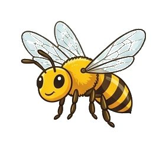
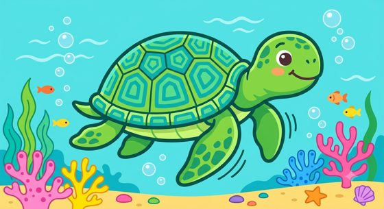
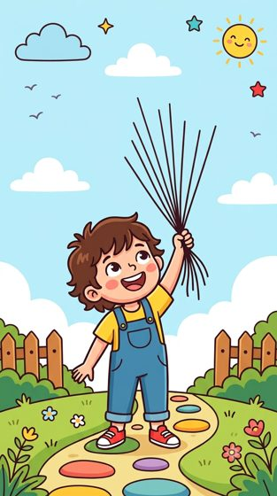

Temaya göre hazırlanmış, A4 kağıtlarına baskıya hazır sınıf kapısı süsleme şablonları. İndir, yazdır, kes ve kapına yapıştır.
Ay, dünya, gezegenler, roket ve yıldızlar.

6 parçalı büyük ağaç gövdesi, kovan, arılar, çiçek ve çimen.

Mercan resifi, ahtapot, balıklar, kaplumbağa, yengeç, denizatı, deniz yıldızı ve kabarcıklar.

İpleri tutan çocuk figürü ve üzerinde sınıf kuralı yazan 7 renkli balon.